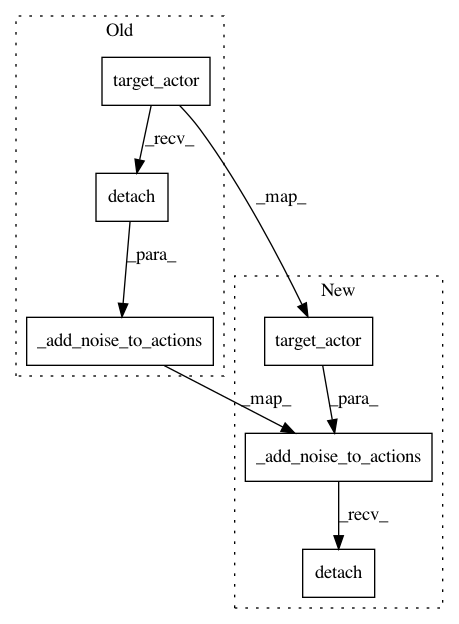

447444fd06594e531ae1141afac78051481e4468,catalyst/rl/offpolicy/algorithms/td3.py,TD3,_categorical_loss,#TD3#Any#Any#Any#Any#Any#,143
Before Change
policy_loss = -torch.mean(q_values_tp0_min)
// critic loss (kl-divergence between categorical distributions)
actions_tp1 = self.target_actor(states_tp1).detach()
actions_tp1 = self._add_noise_to_actions(actions_tp1)
logits_t = [
x(states_t, actions_t).squeeze_(dim=2) for x in self.critics
]
logits_tp1 = [
After Change
// critic loss (kl-divergence between categorical distributions)
// [bs; action_size]
actions_tp1 = self.target_actor(states_tp1)
actions_tp1 = self._add_noise_to_actions(actions_tp1).detach()
// {num_critics} * [bs; num_heads; num_atoms]
// -> many-heads view transform
// {num_critics} * [{bs * num_heads}; num_atoms]
In pattern: SUPERPATTERN
Frequency: 3
Non-data size: 6
Instances
Project Name: catalyst-team/catalyst
Commit Name: 447444fd06594e531ae1141afac78051481e4468
Time: 2019-10-31
Author: scitator@gmail.com
File Name: catalyst/rl/offpolicy/algorithms/td3.py
Class Name: TD3
Method Name: _categorical_loss
Project Name: catalyst-team/catalyst
Commit Name: 447444fd06594e531ae1141afac78051481e4468
Time: 2019-10-31
Author: scitator@gmail.com
File Name: catalyst/rl/offpolicy/algorithms/td3.py
Class Name: TD3
Method Name: _base_loss
Project Name: catalyst-team/catalyst
Commit Name: 447444fd06594e531ae1141afac78051481e4468
Time: 2019-10-31
Author: scitator@gmail.com
File Name: catalyst/rl/offpolicy/algorithms/td3.py
Class Name: TD3
Method Name: _quantile_loss